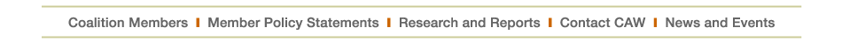

|
|
|  |
Of NoteAbout CAWCoalition Issue Brief, "One Faculty Serving All Students" Read the Issue Brief press release |
WelcomeOrganized in 1997, the Coalition on the Academic Workforce (CAW) is a group of higher education associations, disciplinary associations, and faculty organizations committed to addressing issues associated with deteriorating faculty working conditions and their effect on college and university students in the United States. CAW collects and disseminates information on the use and treatment of full- and part-time faculty members serving off the tenure track and the implications for students, parents, other faculty members, and institutions; articulates and clarifies differences in the extent and consequences of changes in the faculty within and among the various academic disciplines and fields of study; evaluates the short-term and long-term consequences of changes in the academic workforce for society and the public good; identifies and promotes strategies for solving the problems created by inappropriate use and exploitation of part-time, adjunct, and similar faculty appointments; and promotes conditions by which all faculty members, including full- and part-time non-tenure-track faculty members, can strengthen their teaching and scholarship, better serve their students, and advance their professional careers.Survey Report Now AvailableA Portrait of Part-Time Faculty Members: A Summary of Findings on Part-Time Faculty Respondents to the Coalition on the Academic Workforce Survey of Contingent Faculty Members and Instructors is now available online. |